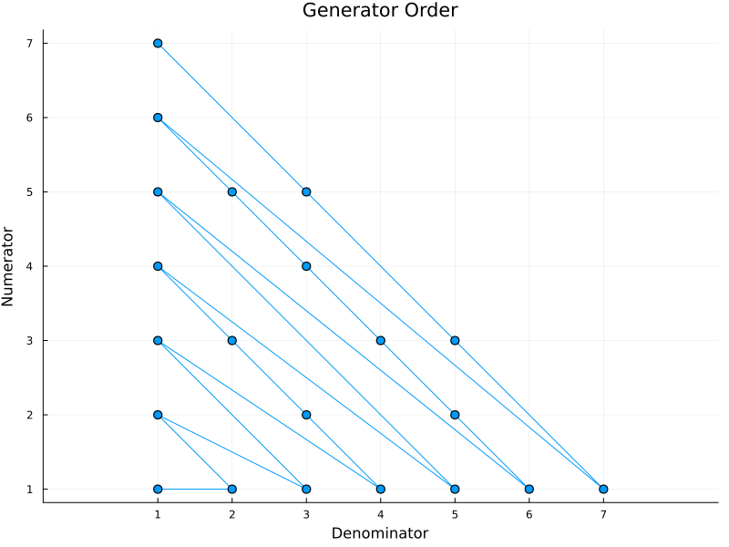

RationalGenerators
This module provides iterators for creating positive rational numbers without repetition.
- Use
RationalGenerator(n)to create all rational numbers of the forma//bwhereaandbare relatively prime anda+b ≤ n. - Use
RationalGenerator()to create all rational numbers.
Order
The first rational number produced is 1//1. Then 1//2 and 2//1. Then, for n equal to 3 and up, we have, in increasing order, the rational numbers of the form a//b where a+b = n and gcd(a,b) = 1.
This figure illustrates the order in which rational numbers are generated:

Examples
julia> using RationalGenerators
julia> collect(RationalGenerator(5))'
1×9 adjoint(::Vector{Rational{Int64}}) with eltype Rational{Int64}:
1//1 1//2 2//1 1//3 3//1 1//4 2//3 3//2 4//1
julia> [r for r in RationalGenerator(7) if r < 1]'
1×8 adjoint(::Vector{Rational{Int64}}) with eltype Rational{Int64}:
1//2 1//3 1//4 2//3 1//5 1//6 2//5 3//4
julia> sum(RationalGenerator(9))
8899//168
julia> for r in RationalGenerator()
if r > 8//3
println(r)
break
end
end
3//1
julia> [t for t in RationalGenerator(20) if denominator(t) == 10]
4-element Vector{Rational{Int64}}:
1//10
3//10
7//10
9//10Small Rationals
To generate rational numbers (without repetition) restricted to the interval (0,1], use SmallRationalGenerator.
SmallRationalGenerator(last_den)generates all rationals in(0,1]whose denominators are at mostlast_den.SmallRationalGenerator()generates all rationals in(0,1].
SmallRatGen is an abbreviation for SmallRationalGenerator.
The rationals are produced with successively larger denominators, starting with 1, and then successively larger numerators.
``` julia> collect(SmallRatGen(6))' 1×12 adjoint(::Vector{Rational{Int64}}) with eltype Rational{Int64}: 1//1 1//2 1//3 2//3 1//4 3//4 1//5 2//5 3//5 4//5 1//6 5//6
julia> [t for t in SmallRatGen(10) if denominator(t) == 9] 6-element Vector{Rational{Int64}}: 1//9 2//9 4//9 5//9 7//9 8//9 ```
To create rationals strictly between 0 and 1, one can do this: ``` julia> X = (t for t in SmallRatGen(4) if t<1);
julia> collect(X)' 1×5 adjoint(::Vector{Rational{Int64}}) with eltype Rational{Int64}: 1//2 1//3 2//3 1//4 3//4 ```
Negative Argument
For both RationalGenerator and SmallRationalGenerator, a negative argument creates an infinite generator. That is, RationalGenerator(-1) has the same effect as RationalGenerator().